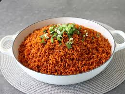

Home
Jollof Recipe

Description
Jollof rice is a popular West African dish made with rice, tomatoes, and a variety of spices.
Ingredients
- 2 cups of long-grain parboiled rice
- 1/4 cup of vegetable oil
- 1 onion, chopped
- 1 red bell pepper, chopped
- 1 green bell pepper, chopped
- 2 cloves of garlic, minced
- 1 teaspoon of thyme
- 1 teaspoon of curry powder
- 1 teaspoon of paprika
- 1 teaspoon of cayenne pepper
- 1 teaspoon of salt
- 1/2 teaspoon of black pepper
- 1 can of diced tomatoes
- 2 cups of chicken or vegetable broth
- 1 cup of mixed vegetables (carrots, peas, corn)
Steps
- Rinse the rice in cold water until the water runs clear.
- Heat the oil in a large pot over medium heat.
- Add the onion and cook until translucent.
- Add the bell peppers and garlic, and cook for another minute.
- Stir in the spices and cook for 30 seconds.
- Add the tomatoes and broth, and bring to a boil.
- Reduce heat to low, cover, and simmer for 20 minutes.
- Stir in the mixed vegetables and cook for another 10 minutes.
- Serve hot with your favorite protein or as a side dish.